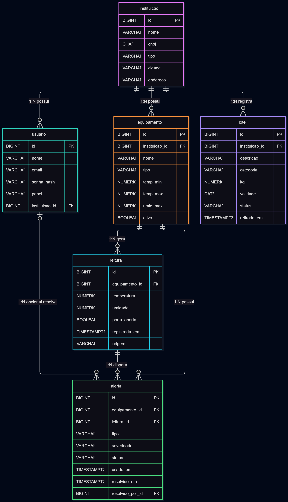
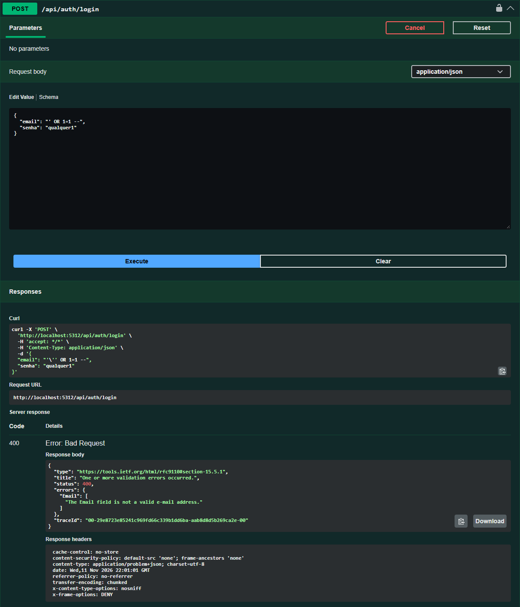
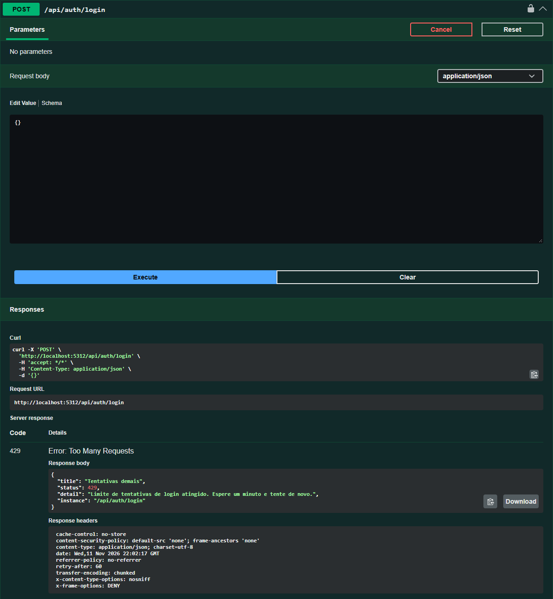
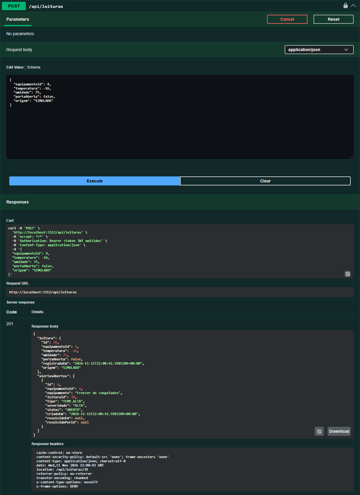
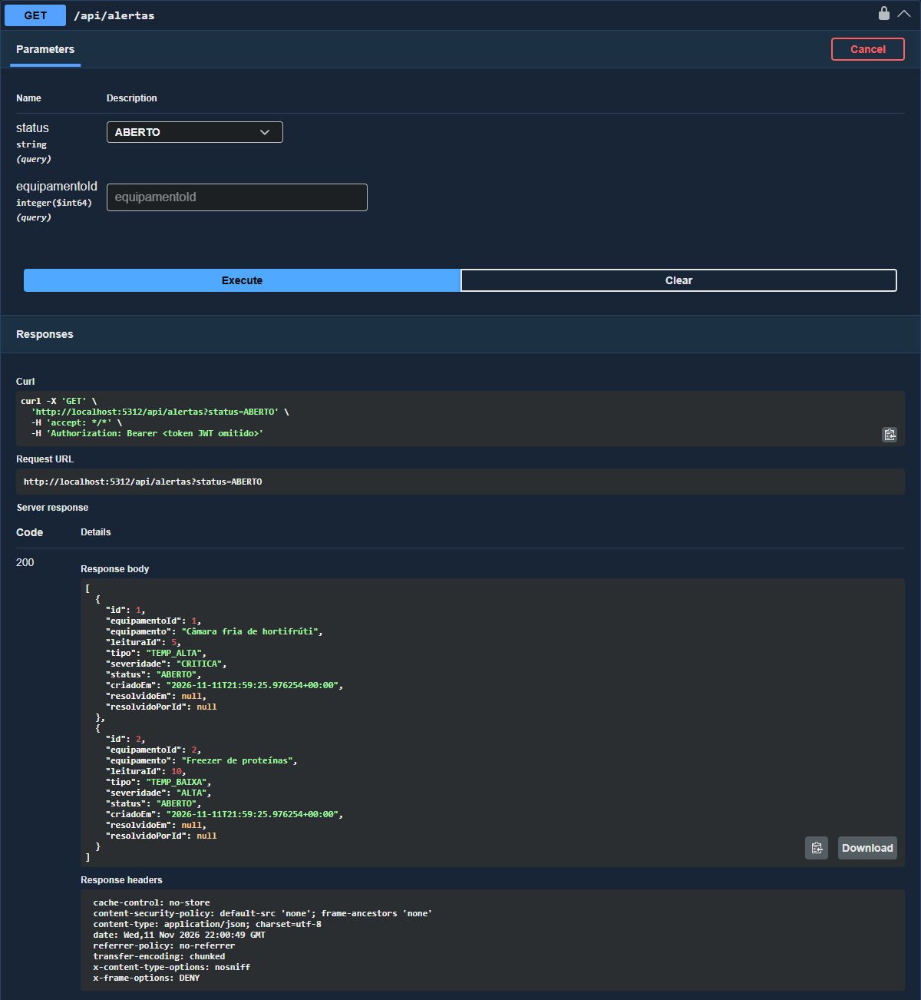
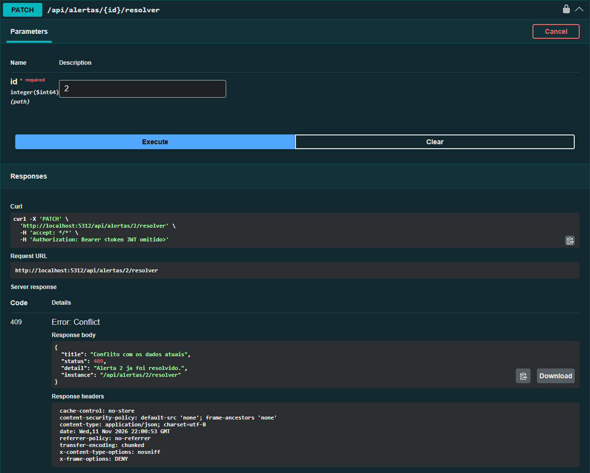
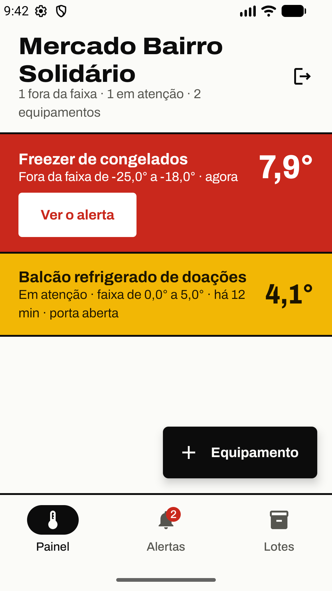
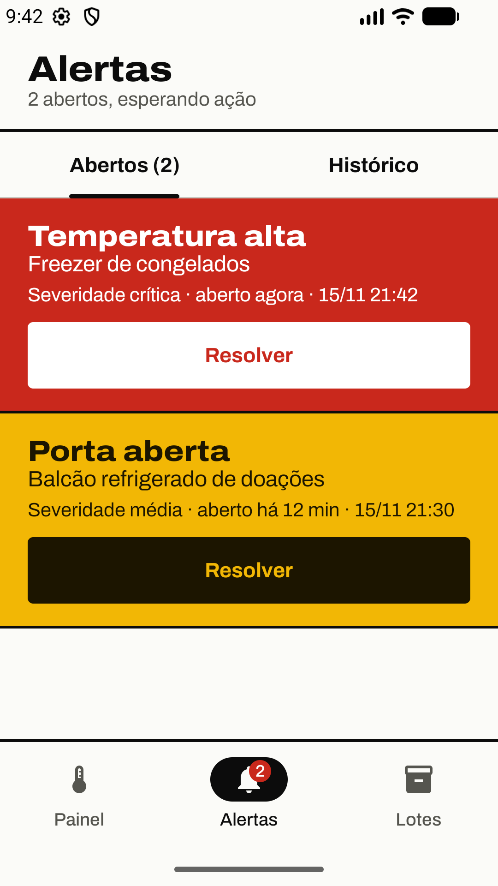
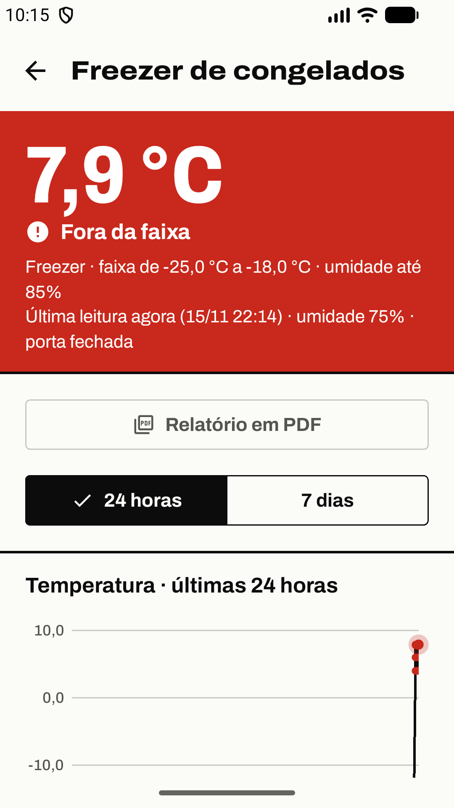

Global Solution 2026/2 — FIAP, turma 3ESOA
Entrega consolidada · 15 de novembro de 2026
| Integrante | RM | Frente |
|---|---|---|
| André Luiz | 554952 | Banco de dados e modelagem |
| Arthur Corrêa | 97781 | Dashboard e testes automatizados |
| Kevin Benevides | 557898 | App mobile (Kotlin + Compose) |
| Roger Viana | 97540 | Hardware, IoT e simulação |
| Yasmin Kimura | 557413 | API, testes de integração e documentação |
Um banco de alimentos trabalha com o que é perecível por definição: o alimento doado já está no fim da vida útil e depende de uma cadeia de frio que ninguém está olhando às 3 da manhã. Quando a câmara falha, o lote não estraga na hora — ele estraga antes de alguém perceber, e a descoberta acontece na manhã seguinte, com o freezer a 7 °C e o lote pronto para o descarte.
| Dado | Número | Fonte |
|---|---|---|
| Alimento perdido ou desperdiçado no planeta por ano | ≈ 1,3 bilhão de toneladas (≈ 30% do produzido) | FAO, apud MAPA — Relatório Final de Perdas e Desperdício de Alimentos |
| Perda no varejo e no consumo (2019) | 931 milhões de t (17% do disponível ao consumidor) | PNUMA, apud mesmo relatório do MAPA |
| Desperdício das famílias brasileiras | 128,8 kg por família/ano (41,6 kg per capita) | MAPA — levantamento nacional |
| Prejuízo anual do Brasil com alimento que vai ao lixo | R$ 61,3 bilhões | Valor Econômico, 15/10/2024 |
| Desperdício anual no Brasil | ≈ 55,4 milhões de t (≈ 30% da produção) | Pacto Contra a Fome (levantamento divulgado pela CNN Brasil) |
| Efeito do monitoramento de temperatura em tempo real | perdas caem de 16% para 8% (carne) e de 15% para 5% (peixe); em morango, de 37% para 23% | SciELO — Braz. J. Food Technol. v.21, e2016069, 2018 (revisão de Jedermann et al. e Nascimento Nunes et al.) |
| Falta de refrigeração e de rastreabilidade | apontadas como causas diretas de perda na distribuição de perecíveis | SciELO — Rev. Econ. Sociol. Rural 60(spe), 2022 (CEASA Campinas) |
O último número é o que dá sentido ao projeto: monitorar a temperatura em tempo real não é controle contábil, é redução de perda medida — de 16% para 8% no transporte de carne. O Brasil tem o desenho institucional, mas não a infraestrutura de registro: o Atlas Global de Políticas de Doação de Alimentos (Harvard Law School/GFN, edição Brasil de janeiro de 2024) mostra que o país não impõe exigência federal de doação nem sanção pelo desperdício, e identifica barreiras fiscais como desestímulo ao doador. Um doador que precisa comprovar destinação correta tem hoje duas opções: papel, ou nada.
O marco legal mudou em 2025: a Lei 15.224, de 30 de setembro de 2025, instituiu a Política Nacional de Combate à Perda e ao Desperdício de Alimentos (PNCPDA), criou o Selo Doador de Alimentos e fixou como objetivo “mitigar o desperdício de alimentos, de forma a contribuir para a redução da insegurança alimentar” (art. 5º, II), com fortalecimento dos bancos de alimentos entre os princípios (art. 4º, VII). A doação deixou de ser gesto isolado e passou a ser política pública — e política pública com meta precisa de registro. É exatamente o que falta na ponta: quem doou 200 kg de iogurte precisa provar que a câmara ficou dentro da faixa, e quem recebeu precisa saber que o alimento foi conservado.
Do lado sanitário, a RDC 216/2004 (ANVISA) exige controle de temperatura na conservação de alimentos preparados. Um sistema que só registra a temperatura no papel não cumpre o controle: ele documenta a intenção, não o fato.
Sensores medem temperatura, umidade e abertura de porta; a API compara cada leitura com a faixa configurada para o equipamento; quando a leitura fica fora da faixa três vezes seguidas, nasce um alerta com severidade, que aparece na fila do voluntário no app e pode ser resolvido no local, registrando quem resolveu, quando e o que foi feito.
| Camada | Tecnologia | O que faz |
|---|---|---|
| Dispositivo | DHT22 + reed switch, simulado por simulacao/sensor.py | Publica leitura a cada 2 s em frio/equipamentos/{id}/leitura |
| Transporte | MQTT (Eclipse Mosquitto 2) | Desacopla o sensor da API; broker aceita N dispositivos |
| API | .NET 10 (ASP.NET Core), 4 camadas | Regra de alerta, CRUD, autenticação JWT, relatório em PDF |
| Banco | PostgreSQL 17 | Histórico, integridade por constraint, consultas de indicadores |
| App | Kotlin + Jetpack Compose (Android) | Painel, fila de alertas, detalhe com gráfico, lotes, relatório |
Fluxo sempre Controller → Service → Repository: o controller não conhece banco, o serviço não conhece HTTP, o repositório não devolve DTO de tela.
O app não fala MQTT: quem assina o broker é a API. Isso é decisão de projeto, não limitação — se o celular assinasse o broker, a senha do broker iria dentro do APK e as regras de alerta e o histórico seriam duplicados em cada aparelho.

docs/der.md).| Tabela | Colunas principais | Regra que o banco garante |
|---|---|---|
instituicao | nome, cnpj (14 dígitos), tipo, cidade, endereco | CNPJ único |
usuario | nome, email, senha_hash (BCrypt), papel, instituicao_id | E-mail único; papel ADMIN ou VOLUNTARIO |
equipamento | nome, tipo, temp_min, temp_max, umid_max, ativo | temp_min < temp_max; umidade entre 0 e 100 |
leitura | temperatura, umidade, porta_aberta, registrada_em, origem | Temperatura de −40 a 80 °C; origem SENSOR ou SIMULADO |
alerta | tipo, severidade, status, criado_em, resolvido_em, resolvido_por_id, acao_tomada | Resolvido exige data e responsável, e resolvido_em ≥ criado_em |
lote | descricao, categoria, kg, validade, status, retirado_em | DISTRIBUIDO/PERDIDO exige retirado_em; DISPONIVEL não tem |
Os enums são CHECK no banco e texto na API (CAMARA, TEMP_ALTA,
ABERTO) — número no lugar do texto volta 400, porque o vocabulário é o contrato. O
schema.sql é a fonte da verdade: o EF Core mapeia, não cria nem altera tabela.
ck_alerta_resolucao_coerente: um alerta não pode ser resolvido antes de ser criado. Apareceu
em teste com leitura de relógio adiantado — o serviço ajusta a data em vez de deixar o UPDATE falhar.ck_lote_retirada_coerente: lote distribuído sem data sairia da conta de kg doados sem aviso.DELETE de instituição com equipamentos/usuários/lotes volta 409 em vez de apagar em cascata.São 24 rotas em /api, todas fechadas por padrão: só /api/auth/login,
/api/health e o Swagger são públicos. Escritas de instituição e equipamento exigem papel
ADMIN; toda leitura é escopada pela instituição do token.
| Método | Rota | O que faz |
|---|---|---|
| POST | /api/auth/login | autentica e devolve o JWT (10 tentativas/min por IP) |
| GET | /api/health | status + quantos equipamentos existem no banco (pública) |
| GET | /api/equipamentos | equipamentos da instituição do token (?ativo=) |
| POST | /api/leituras | registra leitura e devolve os alertas que ela abriu |
| GET | /api/equipamentos/{id}/leituras?periodo=24h | série do gráfico (24h ou 7d) |
| GET | /api/alertas?status=ABERTO | fila da instituição, mais grave primeiro |
| PATCH | /api/alertas/{id}/resolver | resolve com o usuário do token; {"acao":"AJUSTOU"} grava a ação |
| GET | /api/lotes?status= | lotes doados, o que vence primeiro |
| GET | /api/equipamentos/{id}/relatorio?de=&ate= | log térmico em PDF (7 dias por padrão) |
Tabela completa (24 rotas) no README, seção “Endpoints”.
| Ataque | Defesa | Resultado real |
|---|---|---|
| SQL injection no e-mail do login | consulta parametrizada (EF Core) | 400 — texto tratado como dado |
| SQL injection na senha | BCrypt compara hash, não concatena SQL | 401 |
| XSS no nome da instituição | validação de entrada + saída JSON | 400, nada gravado |
| Token de outra instituição | escopo por instituicao_id do token | 403 |
| Força bruta no login | rate limit 10/min por IP | 429 |
| Token expirado / ausente | validação de assinatura e validade | 401 |


A regra vive em uma classe pura, sem banco e sem HTTP, o que permite testá-la exaustivamente:
src/FrioSolidario.Application/Services/RegraDeAlerta.cs.
TEMP_ALTA ou TEMP_BAIXA) — não três. Severidade por tamanho do desvio.PORTA_ABERTA), porque
porta aberta por 40 s ao receber doação não é falha, e aberta por 10 min é perda de frio.UMIDADE acima do limite do equipamento.POST /api/leituras 7.8 °C → 201 POST /api/leituras 7.8 °C → 201 POST /api/leituras 7.8 °C → 201 ← terceira leitura fecha a sequência GET /api/alertas?status=ABERTO → 200 #6 TEMP_ALTA CRITICA ABERTO equipamento 4 ← aberto pela terceira leitura #3 PORTA_ABERTA MEDIA ABERTO equipamento 3 ← evento de porta, contado por tempo alertas TEMP_ALTA do equipamento 4 = 1 (esperado 1, não 3)

Resolução no local, com rastro de quem resolveu:
PATCH /api/alertas/7/resolver {"acao":"AJUSTOU"} → 200
{"id":7,"status":"RESOLVIDO","resolvidoEm":"2026-11-15T22:26:14+00:00","resolvidoPorId":3,"acaoTomada":"AJUSTOU"}
PATCH /api/alertas/7/resolver {"acao":"AJUSTOU"} → 409
"Alerta 7 ja foi resolvido."
select a.id, a.tipo, a.status, a.resolvido_em, u.nome, a.acao_tomada
from alerta a left join usuario u on u.id = a.resolvido_por_id order by a.id desc limit 1;
id | tipo | status | resolvido_em | resolvido_por | acao_tomada
----+-----------+-----------+------------------------+---------------+-------------
7 | TEMP_ALTA | RESOLVIDO | 2026-11-15 22:26:14+00 | Rafael Nunes | AJUSTOU


A ponte MQTT roda dentro da API (Infrastructure/Mqtt) e assina
frio/equipamentos/+/leitura. O simulador simulacao/sensor.py reproduz o hardware
com cinco cenários (pico curto, quebra de compressor, porta aberta 40 s, porta aberta, normal) e publica o
mesmo JSON que o dispositivo real publicaria.
sensor: [mqtt] -> frio/equipamentos/4/leitura
{"equipamentoId":4,"temperatura":7.8,"umidade":75.0,"portaAberta":false,"origem":"SIMULADO"}
MQTT: equipamento 4 7.8C / 75.0% porta fechada -> leitura 37, 1 alerta(s) aberto(s)
A origem do dado é lida do próprio payload (SENSOR ou SIMULADO): assim o dado
que veio do simulador fica marcado como simulado no banco, sem que o app precise saber a diferença — e sem
alterar uma linha de interface.
O contrato do payload tem teste próprio (simulacao/teste_contrato.py) e a desserialização tem
teste xUnit, inclusive para origem inválida (payload com origem desconhecida é recusado, não vira
SENSOR por omissão).
Aplicativo Kotlin + Jetpack Compose, cinco telas integradas à API real (sem dado mockado no código de
produção — grep por mock/fake/hardcoded em app/src/main não retorna nada; os mocks
existem só nos testes, com MockWebServer). Login por JWT, painel com todas as câmaras, fila de alertas,
detalhe com gráfico de 24 h e relatório térmico em PDF.



Dois vídeos, ambos gravação de tela do APK rodando contra a API e o PostgreSQL de verdade:
docs/evidencias/video-app-fluxo-completo-15-11-2026.mp4 (4 min 26 s) — o sistema inteiro
pela interface: login, painel, detalhe com gráfico de 24 h, fila de alertas, resolução com a ação tomada,
histórico, cadastro de lote, cadastro de equipamento e o relatório térmico em PDF aberto na prévia de
impressão, com a tabela das leituras daquele equipamento. Roteiro minuto a minuto em
docs/evidencias-cenarios.md §6.9.docs/evidencias/video-projeto-completo-15-11-2026.mp4 (29 s) — app à esquerda e sensor +
log da API à direita na mesma gravação, para mostrar o alerta nascendo sem corte.O plano tem nove casos em docs/plano-de-testes.md; cada um foi executado contra a API real e
o resultado está em docs/evidencias/caso-0X-*.md, com requisição, resposta e consulta ao banco.
| # | Caso | O que verifica | Veredito |
|---|---|---|---|
| 1 | Login | senha em BCrypt, 200 com token, 401 com senha errada | passou |
| 2 | Perfis | 401 sem token, 403 com VOLUNTARIO em rota ADMIN | passou |
| 3 | Cadastro de equipamento | 201 para ADMIN, 400 com faixa invertida | passou |
| 4 | Manutenção | série de 24 h, 409 ao remover equipamento com leituras | passou |
| 5 | Regra com menos de 3 leituras | duas leituras fora da faixa não abrem alerta | passou |
| 6 | Regra com 3 leituras | terceira abre 1 alerta; quarta não duplica | passou |
| 7 | Segurança | SQLi, XSS, 403 de outra instituição, 429, token expirado | passou (7/7) |
| 8 | Fila e resolução | fila ordenada, resolução com usuário e horário, 409 no repetido | passou (7/7) |
| 9 | Schema do zero | schema.sql + seed.sql em banco vazio | passou |
Além do plano manual, 68 testes xUnit rodam sem banco: a regra pura (limites de faixa,
sequência, alternância, porta, umidade, severidade), o serviço com repositórios em memória e a API de
verdade via WebApplicationFactory (TestServer), cobrindo status code, corpo e headers.
dotnet test Aprovado! – Com falha: 0, Aprovado: 68, Ignorado: 0, Total: 68
O README foi seguido ao pé da letra numa cópia limpa do repositório (sem bin/, sem banco, sem
configuração prévia): docker run do Postgres, docker cp db, schema.sql,
seed.sql, dotnet restore, dotnet run. Resultado:
curl http://localhost:5199/api/health
{"servico":"Frio Solidario API","status":"ok","versao":"1.0.0","ambiente":"Development",
"verificadoEm":"2026-11-15T19:28:01-03:00","origemDosDados":"6 equipamentos no banco"}
O campo origemDosDados é SELECT COUNT(*) no banco de verdade: se o Postgres
estiver fora, a API responde “banco indisponivel” em vez de quebrar.
| Integrante | RM | Entrega | Artefatos |
|---|---|---|---|
| André Luiz | 554952 | Modelagem e banco | db/schema.sql, db/seed.sql, db/consultas.sql, docs/der.md |
| Arthur Corrêa | 97781 | Plano de testes e suíte automatizada | tests/FrioSolidario.Tests, docs/plano-de-testes.md |
| Kevin Benevides | 557898 | App mobile | mobile/, docs/evidencias/app-mobile.md |
| Roger Viana | 97540 | Hardware, MQTT e simulação | simulacao/sensor.py, simulacao/teste_contrato.py, ponte MQTT |
| Yasmin Kimura | 557413 | API, integração ponta a ponta e documentação | src/, casos 1–9 de evidência, README, vídeo da cadeia completa |
ODS 2 — Fome zero e agricultura sustentável. O sistema atua no elo em que o alimento já
foi doado mas ainda pode ser perdido. Cada lote salvo é alimento que chega ao prato em vez do lixo: com um
alerta em segundos, o voluntário fecha a porta, transfere o lote para outra câmara ou prioriza a distribuição
— as três ações que o próprio sistema registra (AJUSTOU, TRANSFERIU_LOTE,
DESCARTOU). Isso se conecta direto à meta 2.1 (acabar com a fome) e à 2.4 (práticas
sustentáveis de produção e cadeia).
ODS 10 — Redução das desigualdades. Banco de alimentos é infraestrutura de redistribuição: o que sobra num comércio abastado chega a quem tem menos. A perda no meio do caminho é perda de acesso. Ao dar rastreabilidade ao lote doado (quantos kg, de onde, com que histórico térmico), o sistema permite que a instituição prove qualidade e amplie a rede de doadores — que é o que a Lei 15.224/2025 passou a incentivar com o Selo Doador.
Cenário ilustrativo (não é medição do projeto): uma câmara com 200 kg de iogurte doado, após uma falha de compressor às 3 h. Sem monitoramento, o lote é encontrado na manhã seguinte e descartado. Com o sistema, três leituras fora da faixa em 4 s geram um alerta crítico, o plantonista recebe no celular e age em minutos. O projeto não mede quantos kg foram salvos em campo — mede o que controla: o tempo entre a falha e o alerta.
| Item | Situação |
|---|---|
| Sensor físico (DHT22 / reed switch) | simulado por simulacao/sensor.py; o payload e o broker são reais |
| Autenticação do broker MQTT | anônima no ambiente de demo; em produção exige usuário/senha por dispositivo |
| App em aparelho físico e em tablet | testado em emulador Android; em aparelho real basta adb reverse tcp:5199 tcp:5199; em tablet a interface foi conferida só no emulador |
| Impressora física no app | o relatório em PDF é gerado pela API e aberto na prévia de impressão; impressão em papel não foi testada |
| Notificação fora do app | o alerta aparece com o app aberto (atualização a cada 10 s); não há push |
| HTTPS e deploy público | fora do escopo desta entrega; API roda em localhost:5199 |
| Chave do JWT | o appsettings.json traz chave de desenvolvimento; em produção vem do ambiente |
Papel de administrador acima de ADMIN | não existe: qualquer ADMIN cadastra outros usuários |
Regra combinada no grupo: declarar as ferramentas de IA usadas e para quê, com revisão humana do resultado. A declaração é do grupo. Nenhuma senha, token ou credencial de instituição real foi usada; os dados são fictícios.
| Item | Declaração |
|---|---|
| Ferramentas usadas | Claude (Claude Code) e DeepSeek (via Hermes Agent, da Nous Research) |
| Para quê | apoio pontual: rascunho de trechos de código e de testes, revisão de texto, conferência de referências (Atlas, ANVISA, Lei 15.224/2025) e explicação de mensagens de erro |
| Como foi usado | como ferramenta de apoio, com revisão humana: todo trecho vindo de IA foi lido, ajustado e só entrou depois de passar em teste automatizado ou chamada real contra a API |
| O que é do grupo | escopo, arquitetura em camadas, modelagem do banco, regra do alerta, decisões de segurança, execução do stack e das evidências, e a escrita final do README e deste PDF |
| Integrantes | André Luiz (554952), Arthur Corrêa (97781), Kevin Benevides (557898), Roger Viana (97540), Yasmin Kimura (557413) |
O projeto não foi gerado por IA de ponta a ponta: as decisões, a modelagem, os testes e a validação são do grupo, e a IA entrou como apoio em partes do código, na revisão de texto e na pesquisa de referência.
# 1. banco docker run -d --name frio-pg -p 5432:5432 -e POSTGRES_PASSWORD=postgres \ -e POSTGRES_DB=frio_solidario postgres:17 docker cp db frio-pg:/sql docker exec frio-pg psql -U postgres -d frio_solidario -v ON_ERROR_STOP=1 -f /sql/schema.sql docker exec frio-pg psql -U postgres -d frio_solidario -v ON_ERROR_STOP=1 -f /sql/seed.sql # 2. API → http://localhost:5199/swagger dotnet restore dotnet run --project src/FrioSolidario.Api # 3. broker + sensor simulado docker run -d --name frio-mqtt -p 1883:1883 eclipse-mosquitto:2 mosquitto -c /mosquitto-no-auth.conf python simulacao/sensor.py --cenario quebra-compressor --rapido # 4. testes dotnet test
App: abrir mobile/ no Android Studio e rodar no emulador (a API é alcançada em
10.0.2.2:5199). Login de demonstração: rafael.nunes@bairrosolidario.example.
Conferência final: cada exigência do documento da entrega, onde ela está respondida neste PDF e o que a sustenta. A coluna "prova" aponta o arquivo ou a saída real que o leitor pode abrir.
| Exigência | Onde está | Prova |
|---|---|---|
| Problema social com número e fonte | §1 | 55,4 mi t/ano (Pacto Contra a Fome), Atlas Global de Doação 2024, SciELO, Lei 15.224/2025 |
| O que o sistema faz e em que camadas | §2 | diagrama das 4 camadas + fluxo Controller → Service → Repository |
| Modelo de dados: diagrama ER e dicionário | §3 | docs/der.md, diagrama das 6 tabelas, dicionário de colunas e regras do banco |
| Tabela de endpoints | §4 | 9 rotas principais; as 24 no README, seção "Endpoints"; Swagger em /swagger |
| Segurança testada contra ataque | §4 | matriz de 6 ataques com resultado real (SQLi 400, força bruta 429, escopo 403) |
| Regra de negócio com saída real | §5 | 3 leituras de 7,8 °C → 1 alerta TEMP_ALTA CRITICA; fila e resolução com acao_tomada |
| IoT: do sensor ao banco | §6 | ponte MQTT (frio/equipamentos/{id}/leitura), latência ~1 s, 5 cenários em simulacao/sensor.py |
| App mobile com prints das telas | §7 | 3 prints legendados + vídeo do fluxo completo (4 min 26 s) + vídeo da cadeia (29 s) |
| Plano de testes com evidências de execução | §8 | docs/plano-de-testes.md, 9 casos em docs/evidencias/caso-01..09 |
| Suíte automatizada e validação do zero | §8 | 68 testes xUnit aprovados; cópia limpa seguindo só o README |
| Quem fez o quê, com nome e RM | capa e §9 | 5 integrantes com RM e os artefatos de cada um |
| Impacto social e ODS 2 / ODS 10 | §10 | carne 16% → 8%, peixe 15% → 5%, morango 37% → 23% (Atlas Global 2024) |
| Limitações declaradas | §11 | 8 itens: sensor físico, auth do broker, aparelho físico/tablet, impressora, notificação fora do app, HTTPS, chave JWT, papel de admin |
| Uso de IA declarado | §12 | declaração do grupo: Claude e DeepSeek (via Hermes Agent) como apoio, com revisão humana e testes |
| Como rodar do zero | §13 | 4 passos numerados + app; mesmo roteiro no README, seção "Quickstart" |
| Toda afirmação numérica com fonte | Referências | FAO/PNUMA, Lei 15.224/2025, RDC 216/2004, Valor 15/10/2024, Pacto Contra a Fome, Atlas 2024, SciELO |